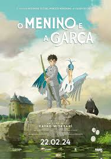

"O Menino e a Garça" (2023), do Studio Ghibli, acompanha Mahito, um menino de 12 anos que, após perder a mãe num incêndio durante a guerra, muda-se para o campo com o pai. Lá, guiado por uma garça falante, ele entra em uma torre abandonada, acessando um mundo fantástico onde vida e morte se misturam.
alugar